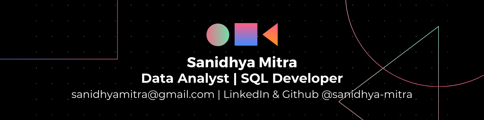
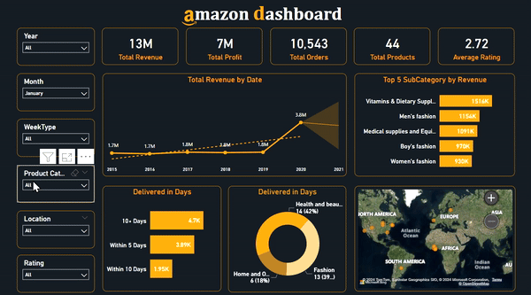

Welcome to my GitHub space—let me introduce myself!
I'm Sanidhya Mitra, a Data Analyst with a deep passion for transforming complex datasets into actionable business insights. My analytical approach ensures that data isn't just numbers, but a roadmap to solving complex business challenges and sculpting the contours of enduring progress. I call this process as Breathing Life Into Barren Data
Philosophy:
Guided by the principle of Sherlock Holmes, "Never theorize before you have data", I investigate complex datasets and delve into the depths of data to unearth insights. I believe in digging deep into data to uncover not just the 'what' but the 'why' and 'how', helping businesses navigate through the fog of uncertainty and into clear, strategic outcomes.
Core Competencies 🛠️:
Examples of Work 👀:
Amazon Dashboard
ⓘ An overview of Amazon's revenue, orders, delivery metrics and operations.
London's Public Bike-Sharing Analytics
ⓘ Analysis of London's bike rental patterns using interactive charts and dynamic tooltips.


Amazon Prime Video Dashboard
ⓘ Analytics for viewer trends and content strategy.

"Never theorize before you have data. Invariably, you end up twisting facts to suit theories, instead of theories to suit facts. The temptation to form premature theories upon insufficient data is the bane of our profession."